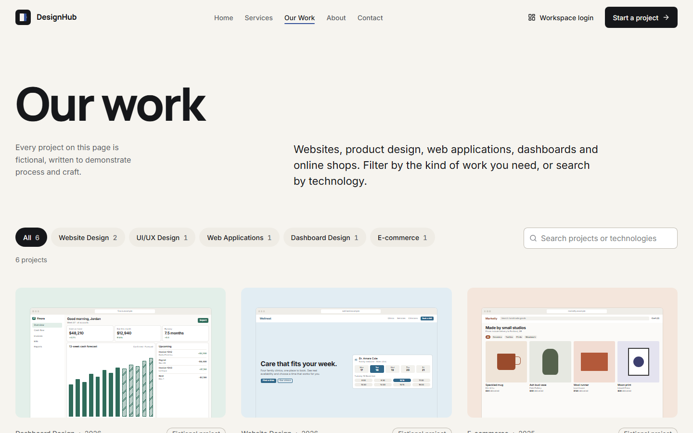
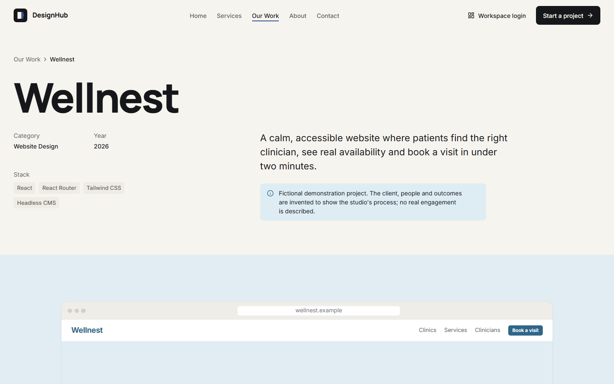
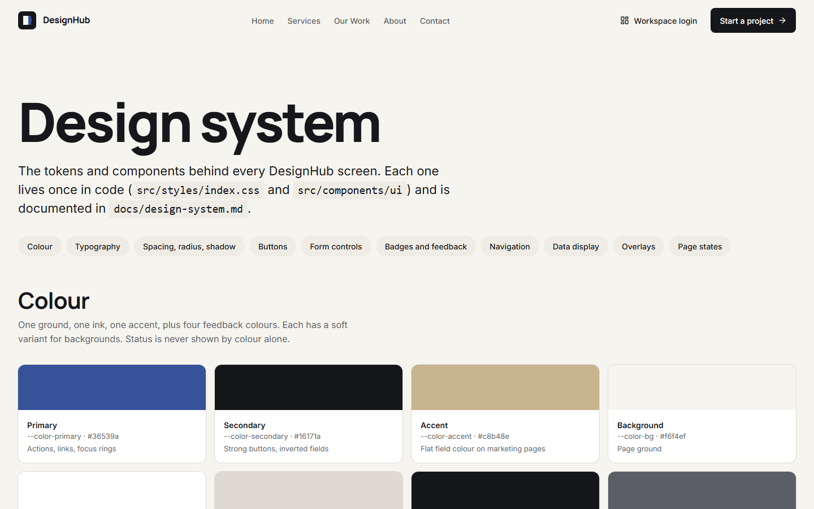

Overview
Two connected experiences on one data layer.
Inquiries sent from the public contact form appear in the workspace, and every dashboard number is computed from the data rather than typed in.
Public website
Home, services, a portfolio with working filters, six case studies, about, and a project-inquiry form.
Studio workspace
Dashboard, projects, clients, tasks as Kanban and table, inquiries, team, and settings.
Design system
A design system, not just styles.
One token file holds colour, type, spacing, radius, shadow, and motion. Tailwind's defaults are cleared, so components can only use tokens. All 29 reusable components are shown live on a /design-system page, and a Figma handoff document describes frames, variables, and per-screen specs.
Accessibility
Accessible by construction.
Dialogs and menus
Focus-trapped dialogs and WAI-ARIA menus and tabs.
Forms
Labelled controls and announced errors.
Not colour alone
Status never relies on colour, and reduced motion is respected.
Keyboard drag
Every drag-and-drop task move has a keyboard alternative through a status menu.
Responsive
Phones get their own compositions.
Verified with no horizontal overflow at 1440, 1280, 1024, 768, 390, and 375 px. On phones the layout switches to a navigation drawer, collapsible filters, bottom-sheet dialogs, and a two-up stat grid.
Data layer
One switch between a mock API and a real one.
A central API client talks to an in-browser mock REST API or to an Express and PostgreSQL backend, chosen by one environment variable. A shared folder holds the dataset, domain rules, and Zod schemas, so the frontend and backend always validate the same way.
Testing
Tests that found real defects.
Scope and limits
Known limitations.
- All companies, people, and projects are fictional. Emails use the reserved .example domain.
- Workspace access is a client-side demo gate, clearly labelled, and not real authentication.
- The PostgreSQL repository and Docker setup are implemented but were not run in the development environment.
- Automated tests run in Chromium only, and no manual screen-reader testing has been done.
Screenshots
The site and workspace.

Kanban with a keyboard alternative for every move.

Same tokens, second theme.

Working filters and search.

One of six case studies.

All 29 components, live.